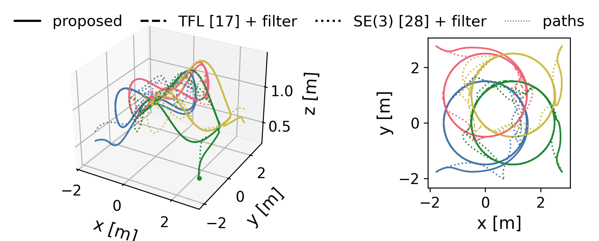
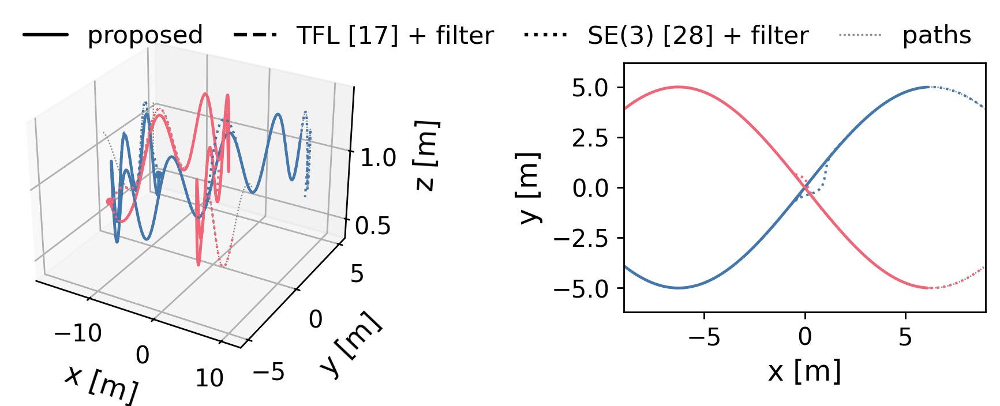
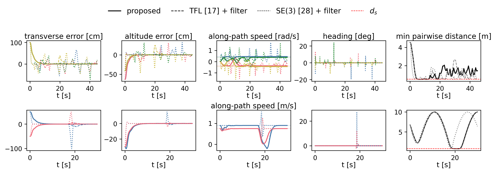

Decentralized Safe Path Following for Multiple Quadrotors on Intersecting Paths
The controller keeps every quadrotor on its assigned path while avoiding collisions at the crossings, by relaxing the along-path speed alone. This page carries the animations behind the paper's figures, the full three-controller comparison, and everything needed to reproduce them.
Four quadrotors, intersecting nonplanar circles
Rendered in Drake at the speeds the paper reports, from starts one metre off path. Watch the crossings: each agent adjusts its speed along its own circle, and none of them steps off to do it. The dotted rings are the assigned paths.
Two quadrotors, intersecting nonplanar sinusoids
A second geometry with a different crossing angle, flown three times faster. The starts are staggered so both agents converge to their paths before they meet, and the separation requirement of 0.8 m between centres holds throughout the crossing.
The two scenarios
Both are flown on the Drake physics engine, with a floating rigid body per quadrotor and quaternion attitude. The controller runs at 400 Hz and holds its input between updates. The circle scenario has twelve crossings, and at several of them an agent is constrained by up to three neighbours at once. The sinusoid scenario is a single staggered crossing, reached only after both agents have converged to their paths.


Against two cascades
The first cascade passes the same nominal TFL controller through a full-input safety filter: nothing pins the transverse or heading rows, so the filter moves them. The second is the geometric controller on SE(3) with the same collision barrier filtered at acceleration level. Barrier poles, separation distance, desired speeds, initial conditions, and control rate are identical across the three.
Proposed
Safety is spent on speed alone.
TFL (Akhtar et al.) + safety filter
Nothing pins the transverse rows, so the filter moves them.
Geometric SE(3) (Lee et al.) + barrier filter
Avoidance is rebuilt into an attitude, which carries the heading with it.
Seen from above, the view where leaving a path is unmistakable. The same three controllers on the sinusoids:
Proposed
TFL (Akhtar et al.) + safety filter
Geometric SE(3) (Lee et al.) + barrier filter

| After convergence, worst over agents | Proposed | TFL + filter | Geometric + filter |
|---|---|---|---|
| Four quadrotors, intersecting circles (measured from t = 15 s, run to 45 s) | |||
| Distance to the assigned path [cm] | 0.04 | 39.9 | 71.5 |
| Heading error [deg] | <1e-03 | 1.38 | 19.6 |
| Closest pair distance [m] | 0.5000 | 0.5000 | 0.4931 |
| Two quadrotors, intersecting sinusoids (measured from t = 15 s, run to 40 s) | |||
| Distance to the assigned path [cm] | 0.05 | 6.6 | 66.6 |
| Heading error [deg] | <1e-03 | 0.030 | 27.5 |
| Closest pair distance [m] | 0.800 | 0.801 | 0.827 |
Green marks the better value in each row. The separation requirement is 0.5 m on the circles and 0.8 m on the sinusoids. The proposed controller and the TFL cascade hold it everywhere; the geometric cascade closes to 0.4931 m on the circles, 6.9 mm inside the boundary at the sampled instants. The proposed controller's reduced program stayed strictly feasible at every step of every run, its equality residual never exceeded 10-13, and its collective thrust stayed above 18.5 N.
Every parameter, for all three controllers
The comparison is only worth reading if the three controllers were given the same problem. These are the complete settings behind every figure on this page.
Shared plant and scenario
| Parameter | Value |
|---|---|
| Mass m | 1.923 kg |
| Inertia J | diag(1.152, 1.152, 2.18) × 10-2 kg m2 |
| Gravity g | 9.8 m/s2 |
| Control rate | 400 Hz, zero-order hold |
| Integrator | Drake continuous plant, quaternion floating body |
| Separation ds | 0.5 m (circles), 0.8 m (sinusoids) |
| Circle radius R | 1.5 m, centres (0,0), (0,1), (1,0), (1,1) m |
| Height field | z = 1 + 0.25 sin(2πx/3) m |
| Desired speeds, circles | (0.45, −0.375, 0.375, −0.45) rad/s (path-coordinate rate) |
| Sinusoid geometry | y = ±5 sin(0.25 x), same height field |
| Desired speeds, sinusoid | (0.9, 0.75) m/s (x-rate); starts x = (−16.2, −13.6), near-simultaneous crossing |
| Start | off path (1 m radial on circles, 0.5 m lateral on sinusoids), level attitude, hover thrust |
Proposed controller
| Parameter | Value |
|---|---|
| Transverse gains kξ | 200, 400, 90, 30 |
| Altitude gains kζ | 100, 200, 60, 20 |
| Speed gains | triple pole at −2: 8, 12, 6 |
| Heading gains | 10, 12 |
| Cost weights | W = I4, P = 100 |
| Collision ECBF | quadruple real pole at −3.75 |
| Attitude ECBF | four one-sided barriers, double pole at −10, margin ε = 0.1 rad |
| Responsibility | wi = wj = 1/2 |
| Rows | N + 3: four attitude + (N − 1) collision |
| Solve | closed-form clipping of the reduced scalar program, no numerical solver in the loop |
TFL with a full-input safety filter
| Parameter | Value |
|---|---|
| Nominal feedback | the same transverse feedback linearization, by inversion |
| Filter | min ‖ν − νTFL‖2 subject to the same barrier rows |
| Barrier rows | identical: four attitude + collision, same poles and weights |
| Difference from proposed | the hard equality is dropped, and there is no slack |
| Solve | OSQP through cvxpy, eps 10-8, CLARABEL fallback |
Geometric controller with a barrier filter
| Parameter | Value |
|---|---|
| Position gains | kx = 16 m, kv = 5.6 m |
| Attitude gains | kR = 8.81, kΩ = 2.54 |
| Reference | the same path, with the path coordinate advancing at the same desired speed |
| Filter | acceleration-level collision barrier, double pole at −3.75 |
| Separation | 0.5 m, as above |
Reproducing this
Everything in the paper and on this page comes out of the
GitHub repository, from the
simulation code under sim/. The verification gates
run first: they check the controller algebra over thousands of random states, validate the
phase layer against finite differences, and cross-check the closed-form solve against a
numerical QP and the assembled dynamics against direct symbolic differentiation. The six
rollouts then write the state logs, the analysis script computes every number quoted in
Section V of the paper, fig_paper_suite.py regenerates the paper's
Figs. 2 and 3 together with the plots on this page, and
drake_render.py renders the animations above. One command,
bash reproduce.sh, runs the install, the gates, the rollouts, the
metrics, and the figures end to end.
# set up
git clone https://github.com/gradslab/safe_multiquad_pf.git
cd safe_multiquad_pf/sim
pip install -r requirements.txt
python3 tests/test_layer.py
python3 tests/test_paper_port.py
python3 tests/test_oracle.py
# the six runs behind every number and figure
for c in "" "--controller baseline" "--controller se3"; do
python3 experiments/run_circles.py --scenario circles --agents 4 --offpath \
--tmax 45 --rate 400 --lam-pair 3.75 --tag _final2 $c
python3 experiments/run_circles.py --scenario sine --agents 2 --offpath \
--tmax 40 --rate 400 --ds 0.8 --tag _final2 $c
done
# metrics and figures
python3 experiments/analyze_paper_runs.py --tag _final2 --json results/paper_metrics_final2.json
python3 experiments/fig_paper_suite.py --tag _final2
# animations (Drake VTK renderer): three views per controller
for v in iso top side; do
python3 experiments/drake_render.py --rate 400 --scenario circles --agents 4 \
--tmax 45 --controller proposed --view $v --tag _$v
doneCitation
@unpublished{tariq_decentralized,
author = {Hamza Tariq and Adeel Akhtar},
title = {Decentralized Safe Path Following for Multiple Quadrotors
on Intersecting Paths},
note = {Under review},
year = {2026}
}